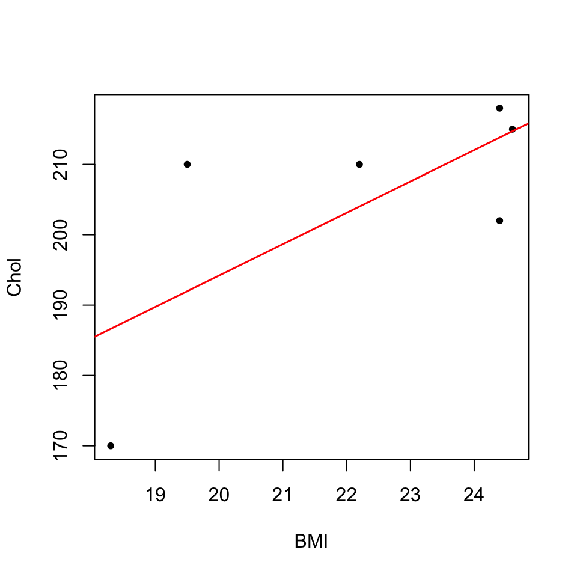
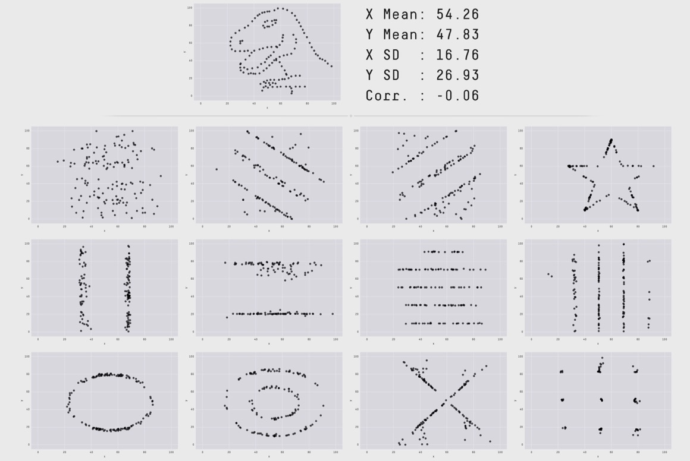

Tema 9 Introducció a l’estadística multidimensional
En general, les dades que es recullen en experiments són multidimensionals: mesuram diverses variables aleatòries sobre una mateixa mostra d’individus i organitzam aquesta informació en taules de dades on les fileres representen els individus observats i cada columna correspon a una variable diferent. És a dir, el que fem és avaluar un vector de variables aleatòries (en direm un vector aleatori) sobre els individus d’una població. En aquesta lliçó introduïm alguns conceptes nous sobre vectors de variables aleatòries i taules multidimensionals de dades quantitatives.
9.1 Poblacions: vectors aleatoris
Un vector aleatori de dimensió \(p\) és un vector format per \(p\) variables aleatòries \[ \underline{X}=(X_1,X_2,\ldots,X_p). \] Una realització de \(\underline{X}\) és un vector \((x_1,\ldots,x_p)\) format pels valors de \(X_1,\ldots,X_p\) sobre un individu. Una mostra de \(\underline{X}\) és un conjunt de realitzacions. Usualment, organitzam una mostra de \(\underline{X}\) per mitjà d’una taula de dades amb les columnes definides per les variables \(X_1,\ldots,X_p\) i on cada filera és una realització d’aquestes variables, és a dir, un vector format pels valors de \(X_1,\ldots,X_p\) sobre un individu de la mostra.
| BMI | C | E |
|---|---|---|
| 18.3 | 170 | 49 |
| 24.4 | 202 | 39 |
| 24.6 | 215 | 50 |
| 24.4 | 218 | 44 |
| 22.2 | 210 | 40 |
| 19.5 | 210 | 36 |
Siguin \(\underline{X}=(X_1,X_2,\ldots,X_p)\) un vector aleatori i \(\mu_i\) i \(\sigma_i\) la mitjana i la desviació típica, respectivament, de cada \(X_i\).
El valor esperat, o vector de mitjanes, de \(\underline{X}\) és el vector format pels valors esperats, o mitjanes, de les seves components: \[ E(\underline{X})=(\mu_1,\ldots,\mu_p). \] Per abreviar, de vegades indicarem aquest vector simplement amb \(\boldsymbol\mu\).
El vector de variàncies de \(\underline{X}\) és el vector format per les variàncies de les seves components: \[ \sigma^2(\underline{X})=(\sigma_1^2,\ldots,\sigma_p^2). \]
El vector de desviacions típiques de \(\underline{X}\) és el vector format per les desviacions típiques de les seves components: \[ \sigma(\underline{X})=(\sigma_1,\ldots,\sigma_p). \]
9.1.1 Covariància
La covariància de dues variables \(X\) i \(Y\) és una mesura del seu comportament conjunt. Formalment, donades dues variables aleatòries \(X,Y\) de mitjanes \(\mu_X\) i \(\mu_Y\), respectivament, la seva covariància és \[ \sigma_{X,Y}=E((X-\mu_X)\cdot ( Y-\mu_Y)). \] És fàcil comprovar que \[ \sigma_{X,Y}=E(X\cdot Y) -\mu_X\cdot \mu_Y. \]
La covariància de \(X\) i \(Y\) pot prendre qualsevol valor real (no com la variància, que sempre és positiva), i mesura el grau de variació conjunta de les variables en el sentit següent.
\(\sigma_{X,Y}>0\) significa que
Quan \(X\) és més gran en un individu 1 que en un individu 2, \(Y\) tendeix a ser més gran en l’individu 1 que en l’individu 2
Quan \(X\) és més petit en un individu 1 que en un individu 2, \(Y\) tendeix a ser més petit en l’ individu 1 que en l’individu 2
\(\sigma_{X,Y}<0\) significa que
Quan \(X\) és més gran en un individu 1 que en un individu 2, \(Y\) tendeix a ser més petit en l’individu 1 que en l’individu 2
Quan \(X\) és més petit en un individu 1 que en un individu 2, \(Y\) tendeix a ser més gran en l’individu 1 que en l’individu 2
\(\sigma_{X,Y}=0\) significa que no hi ha cap tendència en aquest sentit
Figura 9.1: Significat del signe de la covariància
El signe de la covariància reflecteix la “tendència del creixement conjunt” de les variables:
- Covariància positiva: Si \(X\) creix, \(Y\) tendeix a créixer, i si \(X\) decreix, \(Y\) tendeix a decréixer
- Covariància negativa: Si \(X\) creix, \(Y\) tendeix a decréixer, i si \(X\) decreix, \(Y\) tendeix a créixer
Si \(X\) i \(Y\) són variables independents, la seva covariància es 0, perquè en aquest cas \(E(X\cdot Y) =\mu_X\mu_Y\) i per tant \[ \sigma_{X,Y}=E(X\cdot Y) -\mu_X\cdot \mu_Y=\mu_X\cdot \mu_Y-\mu_X\cdot \mu_Y=0. \]
Ups, aquesta és nova! Per què, si \(X\) i \(Y\) són independents, \(E(X\cdot Y) =\mu_X\mu_Y\)? Us ho demostrarem en el cas discret; l’argument en el cas continu és el mateix canviant sumatoris per integrals. \[ \begin{array}{rl} E(X\cdot Y)\!\!\! &\displaystyle =\sum_{x\in D_X,y\in D_Y} xyP(X=x,Y=y)\\ &\displaystyle =\sum_{x\in D_X,y\in D_Y} xyP(X=x)P(Y=y)\\ &\text{(per la independència de $X$ i $Y$)}\\ &\displaystyle =\Big(\sum_{x\in D_X}xP(X=x)\Big)\Big(\sum_{y\in D_Y} yP(Y=y)\Big)=E(X)E(Y) \end{array} \]
És important remarcar que la igualtat \(E(X\cdot Y) =\mu_X\mu_Y\) és equivalent a la igualtat \(\sigma(X+Y)^2 =\sigma(X)^2+\sigma(Y)^2\) que dèiem al Tema 2 que satisfan les variables independents. En efecte \[ \begin{array}{l} \sigma(X+Y)^2 -(\sigma(X)^2+\sigma(Y)^2)\\ \quad = E((X+Y)^2)-E(X+Y)^2-(E(X^2)-E(X)^2+E(Y^2)-E(Y)^2)\\ \quad = E(X^2+2XY+Y^2)-(E(X)+E(Y))^2\\ \qquad\qquad -E(X^2)+E(X)^2-E(Y^2)+E(Y)^2\\ \quad = E(X^2)+2E(XY)+E(Y^2)-E(X)^2-2E(X)E(Y)-E(Y)^2\\ \qquad\qquad -E(X^2)+E(X)^2-E(Y^2)+E(Y)^2\\ \quad = 2E(XY)-2E(X)E(Y)=2(E(XY)-\mu_X\mu_Y) \end{array} \] i per tant \[ \sigma(X+Y)^2 -(\sigma(X)^2+\sigma(Y)^2)=0 \Longleftrightarrow E(XY)-\mu_X\mu_Y=0 \]
Vegem un exemple d’aquest darrer fet:
Exemple 9.2 Suposem que tenim un dau tetraèdric no trucat amb les cares marcades amb els valors -2, -1, 1 i 2. Siguin \(X\) la variable aleatòria que consisteix a llançar el dau i anotar el resultat, i \(Y\) la variable aleatòria que consisteix a llançar el dau i anotar el quadrat del resultat obtingut. Com que les quatre cares del dau són equiprobables, \[ \begin{array}{l} \displaystyle P(X=-2)=P(X=-1)=P(X=1)=P(X=2)=\frac{1}{4}\\ \displaystyle P(Y=1)=P(Y=4)=\frac{1}{2} \end{array} \]
Com que \(Y\) és funció de \(X\), ja que \(Y=X^2\), \(X\) i \(Y\) no poden ser mai independents. Vegem que, en efecte, no ho són. Observau que els únics possibles valors per al vector \((X,Y)\) en una tirada del dau són (-2,4), (-1,1), (1,1) i (2,4), cadascun amb probabilitat 1/4. Llavors, per exemple, la probabilitat d’obtenir en una tirada \(X=-1\) i \(Y=4\) és 0, perquè és impossible, mentre que \[ P(X=-1)\cdot P(Y=4)=\frac{1}{4}\cdot\frac{1}{2}=\frac{1}{8}\neq 0. \]
Vegem ara que la covariància de \(X\) i \(Y\) es 0. Per calcular-la, primer necessitam calcular els valors esperats de les variables: \[ \begin{array}{l} \displaystyle \mu_X=(-2)\cdot \frac{1}{4}+(-1)\cdot \frac{1}{4}+1\cdot \frac{1}{4}+2\cdot \frac{1}{4}=0\\ \displaystyle \mu_Y=1\cdot \frac{1}{2}+4\cdot \frac{1}{2}=2.5 \end{array} \] Per tant \[ \begin{array}{l} \sigma_{X,Y}=E\big(X\cdot Y\big)-\mu_X\cdot \mu_Y=E\big(X\cdot Y\big)-0\cdot 2.5=E\big(X\cdot Y\big)\\ \qquad =P\big(X=-2,Y=4\big)\cdot (-2\cdot 4)+P\big(X=-1,Y=1\big)\cdot (-1\cdot 1)\\ \qquad\qquad\qquad +P\big(X=1,Y=1\big)\cdot (1\cdot 1)+P\big(X=2,Y=4\big)\cdot (2\cdot 4)\\ \qquad =\displaystyle \frac{1}{4}\cdot (-8)+\frac{1}{4}\cdot (-1)+\frac{1}{4}\cdot 1+\frac{1}{4}\cdot 8=0. \end{array} \] Així doncs, \(X\) i \(Y\) són variables dependents, però la seva covariància és 0.
Dues propietats importants més de la covariància:
La covariància és simètrica: \[ \begin{array}{rl} \sigma_{X,Y}\!\!\! & =E((X-\mu_X)\cdot ( Y-\mu_Y))\\ & =E(( Y-\mu_Y)\cdot (X-\mu_X))=\sigma_{Y,X} \end{array} \]
La covariància d’una variable aleatòria amb ella mateixa és la seva variància: \[ \sigma_{X,X}=E((X-\mu_X)^2)=\sigma^2(X) \]
La matriu de covariàncies d’un vector aleatori \(\underline{X}=(X_1,\ldots,X_p)\) és la matriu formada per les covariàncies dels parells de variables que la formen: \[ \sigma_{\underline{X},\underline{X}}=\begin{pmatrix} \sigma_{X_1,X_1} & \sigma_{X_1,X_2} & \ldots & \sigma_{X_1,X_p}\\ \sigma_{X_2,X_1} & \sigma_{X_2,X_2} & \ldots & \sigma_{X_2,X_p}\\ \vdots & \vdots &\ddots & \vdots\\ \sigma_{X_p,X_1} & \sigma_{X_p,X_2} & \ldots & \sigma_{X_p,X_p}\\ \end{pmatrix} \]
Aquesta matriu és simètrica i les entrades de la diagonal són les variàncies de les variables del vector, perquè \(\sigma_{X_i,X_i}=\sigma^2_{X_i}\).
9.1.2 Correlació
Com hem dit, el signe de la covariància té una interpretació senzilla, ja que reflecteix la tendència del creixement conjunt de les variables. Emperò, la seva magnitud no té una interpretació senzilla. Aleshores, per mesurar la tendència que hi hagi una relació lineal entre dues variables aleatòries contínues s’usa l’anomenat coeficient de correlació lineal de Pearson (o correlació a seques), que ve a ser una versió normalitzada de la covariància. En concret, la correlació de les variables \(X\) i \(Y\) es defineix com el quocient de la seva covariància pel producte de les seves desviacions típiques: \[ \rho_{X,Y}=\frac{\sigma_{X,Y}}{\sigma_{X} \sigma_{Y}} \]
La correlació té les propietats importants següents:
No té unitats (perquè les unitats de \(\sigma_X\) són les de \(X\), les unitats de \(\sigma_Y\) són les de \(Y\), i les unitats de \(\sigma_{X,Y}\) són les de \(X\) per les de \(Y\))
Pren valors entre -1 i 1: \(-1\leqslant \rho_{X,Y}\leqslant 1\)
És simètrica, \(\rho_{X,Y}= \rho_{Y,X}\)
La correlació d’una variable amb ella mateixa és 1: \(\rho_{X,X}=1\)
\(\rho_{X,Y}=\pm 1\) si, i només si, les variables \(X,Y\) tenen una relació lineal perfecta. És a dir, \(\rho_{X,Y}=\pm 1\) si, i només si, existeixen \(a,b\in \mathbb{R}\) tals que \(Y=a X+b\). La pendent \(a\) d’aquesta recta té el mateix signe que \(\rho_{X,Y}\).
Com més s’acosta \(|\rho_{X,Y}|\) a 1, més s’acosta \(Y\) a ser funció lineal de \(X\)
- Si \(\rho_{X,Y}>0\), la funció és creixent
- Si \(\rho_{X,Y}<0\), la funció és decreixent
Si \(\rho_{X,Y}=0\), diem que les variables \(X\) i \(Y\) són incorrelades. Notem que la correlació és 0 si, i només si, la covariància és 0. Per tant, si \(X\) i \(Y\) són independents, també són incorrelades. El recíproc en general és fals, com mostra l’Exemple 9.2.
La matriu de correlacions d’un vector aleatori \(\underline{X}=(X_1,\ldots,X_p)\) és la matriu formada per les correlacions de parells de les seves variables: \[ \rho(\underline{X}) =\begin{pmatrix} 1 & \rho_{X_1,X_2} & \ldots & \rho_{X_1,X_p}\\ \rho_{X_2,X_1} & 1 & \ldots & \rho_{X_2,X_p}\\ \vdots & \vdots & \ddots & \vdots\\ \rho_{X_p,X_1} & \rho_{X_p,X_2} & \ldots & 1\\ \end{pmatrix}. \] Aquesta matriu és simètrica per la simetria de la correlació.
La correlació de Pearson de dues variables mesura la tendència de dues variables a variar conjuntament de manera lineal. Per tant, per exemple, si \(\rho_{X,Y}>0\), implica que \(Y\) tendeix a créixer si \(X\). Però no significa que un augment del valor de \(X\) causi un augment del valor de \(Y\): Correlació no implica causalitat!. La tendencia al criexement simultani de \(X\) i \(Y\) es pot deure a una tercera variable que les faci créixer totes dues, o pot ser purament espúria.

Figura 9.2: Correlació no implica causalitat (https://xkcd.com/552/ (CC-BY-NC 2.5))
O millor:
Figura 9.3: Correlació no implica causalitat, segons Dilbert
Figura 9.4: Correlació no implica causalitat, segons “Spurious Correlations”
Vegem un exemple de correlació negativa que és important tenir present per no deixar-se enganar.
Això ens diu que, sigui quina sigui la variable \(X\), si la mesuram en dos moments diferents o sobre dos individus diferents, la diferència entre els dos valors té una tendència destacada a decréixer linealment en el primer valor. Per exemple:
Feu un test i traieu una nota molt baixa (\(X_1\)). L’endemà feu un altre test similar (\(X_2\)) sense haver estudiat més. El més probable és que, per pur atzar, tengueu una nota més alta (que \(X_2-X_1\) sigui gran, per tant positiu).
Feu un test i traieu una nota molt alta (\(X_1\)). L’endemà feu un altre test (\(X_2\)) sense haver estudiat més. El més probable és que, per pur atzar, tengueu una nota més baixa (que \(X_2-X_1\) sigui petit, per tant negatiu).
Per si qualcú necessita una demostració del teorema anterior, recordem que \[ \rho_{X_1,X_2-X_1}=\dfrac{\sigma_{X_1,X_2-X_1}}{\sigma_{X_1}\sigma_{X_2-X_1}} \] Ara \[ \begin{array}{l} \sigma_{X_2-X_1}=\sqrt{\sigma^2_{X_2-X_1}}\\[2ex] \quad =\sqrt{\sigma^2_{X_1}+\sigma^2_{X_2}}\ \text{(perquè són independents)}\\[2ex] \quad =\sqrt{\sigma^2_{X}+\sigma^2_{X}}\ \text{(perquè $X_1,X_2$ són còpies de $X$)}\\[2ex] \quad =\sqrt{2\sigma^2_{X}}=\sigma_{X}\sqrt{2} \end{array} \] I \[ \begin{array}{l} \sigma_{X_1,X_2-X_1}=E(X_1(X_2-X_1))-E(X_1)E(X_2-X_1)\\[1ex] \quad =E(X_1X_2-X_1^2)-E(X_1)(E(X_2-E(X_1))\\[1ex] \quad =E(X_1X_2)-E(X_1^2)-E(X_1)E(X_2)+E(X_1)E(X_1)\\[1ex] \quad =E(X_1)E(X_2)-E(X_1^2)-E(X_1)E(X_2)+E(X_1)E(X_1)\\[1ex] \quad \text{(perquè $X_1,X_2$ són independents)}\\[1ex] \quad =-E(X_1^2)+E(X_1)E(X_1)=-\sigma^2_{X_1}=-\sigma^2_{X} \end{array} \] Combinant-ho: \[ \rho_{X_1,X_2-X_1}=\dfrac{\sigma_{X_1,X_2-X_1}}{\sigma_{X_1}\sigma_{X_2-X_1}}=\dfrac{-\sigma^2_{X}}{\sigma_{X}\cdot \sigma_{X}\sqrt{2}} =-\frac{1}{\sqrt{2}} \]
9.2 Estadística descriptiva: Mostres
9.2.1 Covariàncies
Siguin \(x=(x_1,\ldots,x_n)\) i \(y=(y_1,\ldots,y_n)\) dos vectors obtinguts mesurant dues variables aleatòries \(X\) i \(Y\) sobre una mateixa mostra ordenada d’individus de mida \(n\) d’una població. Siguin \(\overline{X}\) i \(\overline{Y}\) les seves mitjanes mostrals. Aleshores la seva covariància mostral és \[ \widetilde{S}_{X,Y} =\frac{1}{n-1} \sum_{i =1}^n\big((x_{i}-\overline{{X}})(y_i-\overline{Y})\big) \] i la seva covariància (a seques) és \[ {S}_{X,Y} =\frac{1}{n} \sum_{i =1}^n\big((x_{i}-\overline{{X}})(y_i-\overline{Y})\big)=\frac{n-1}{n}\widetilde{S}_{X,Y}. \] És a dir, com sempre, la diferència entre la versió “mostral” i la versió “a seques” rau en el denominador, \(n-1\) i \(n\) respectivament.
Com en el cas poblacional, la covariància entre dos vectors mesura la tendència que tenen les seves dades a variar conjuntament:
Quan \(\widetilde{S}_{X,Y}>0\), si \(x_i>x_j\), \(y_i\) tendeix a ser més gran que \(y_j\)
Quan \(\widetilde{S}_{X,Y}>0\), si \(x_i>x_j\), \(y_i\) tendeix a ser més petit que \(y_j\)
Quan \(\widetilde{S}=0\), no hi ha cap tendència en aquest sentit
És fàcil comprovar que:
- Les dues covariàncies són simètriques \[ \widetilde{S}_{X,Y}=\widetilde{S}_{y,x},\ {S}_{X,Y}={S}_{Y,X} \]
- La variància d’un vector és la seva covariància amb ell mateix \[ \widetilde{S}_{X,X}=\widetilde{S}^2_{x},\ {S}_{X,X}={S}^2_{X}. \]
Exemple 9.3 Hem mesurat l’índex de massa corporal, BMI, i el nivell de colesterol en 5 individus sans. Guardam els resultats en un data frame i en calculam les mitjanes:
BMI= c(18.3,24.4,24.6,24.4,22.2,19.5)
Chol=c(170,202,215,218,210,210)
DF=data.frame(BMI,Chol)
mean(BMI)## [1] 22.23333mean(Chol)## [1] 204.1667Aleshores la covariància mostral d’aquests dos vectors és \[ \begin{array}{l} \dfrac{1}{5}\Big((18.3-22.23)(170-204.17)+(24.4-22.23)(202-204.17)\\ \qquad +(24.6-22.23)(215-204.17)+(24.4-22.23)(218-204.17)\\ \qquad +(22.2-22.23)(210-204.17)+(19.5-22.23)(210-204.17)\Big)=33.8333 \end{array} \]
i la seva covariància a seques és \[ \begin{array}{l} \dfrac{1}{6}\Big((18.3-22.23)(170-204.17)+(24.4-22.23)(202-204.17)\\ \qquad +(24.6-22.23)(215-204.17) +(24.4-22.23)(218-204.17)\\ \qquad +(22.2-22.23)(210-204.17)+(19.5-22.23)(210-204.17)\Big)=27.0667 \end{array} \]
La covariància mostral de dos vectors numèrics de la mateixa longitud \(n\) es calcula amb R amb la funció cov. Per obtenir la seva covariància a seques, cal multiplicar el resultat de cov per \((n-1)/n\).
cov(BMI,Chol)## [1] 33.83333Considerem una taula de dades de la forma \[ \begin{array}{cccc} X_1 & X_2 & \ldots & X_p\\ \hline x_{1 1} & x_{1 2} &\ldots & x_{1 p}\\ x_{2 1} & x_{2 2} &\ldots & x_{2 p}\\ \vdots & \vdots & \ddots &\vdots\\ x_{n 1} & x_{n 2} &\ldots & x_{n p} \end{array} \] on cada columna representa els valors d’una certa variable \(X_i\) i cada filera un individu d’una mostra de la població, de manera que l’entrada \(x_{ij}\) d’aquesta taula és el valor de \(X_j\) sobre l’individu \(i\)-èssim de la mostra.
La matriu de covariàncies mostrals d’aquesta taula és la matriu \[ \widetilde{{S}}= \begin{pmatrix} \widetilde{S}^2_{X_1} & \widetilde{S}_{X_1,X_2} & \ldots & \widetilde{S}_{X_1,X_p}\\ \widetilde{S}_{X_2,X_1} & \widetilde{S}^2_{X_2} & \ldots & \widetilde{S}_{X_2,X_p}\\ \vdots & \vdots & \ddots & \vdots\\ \widetilde{S}_{X_p,X_1} & \widetilde{S}_{X_p,X_2} & \ldots & \widetilde{S}^2_{X_p} \end{pmatrix} \] i la matriu de covariàncies (a seques) es defineix de manera similar, però amb les covariàncies a seques: \[ {S}= \begin{pmatrix} s^2_{X_1} & s_{X_1,X_2} & \ldots & s_{X_1,X_p}\\ s_{X_2,X_1} & s^2_{X_2} & \ldots & s_{X_2,X_p}\\ \vdots & \vdots & \ddots & \vdots\\ s_{X_p,X_1} & s_{X_p,X_2} & \ldots & s^2_{X_p} \end{pmatrix} \] Totes dues són simètriques.
La matriu de covariàncies mostrals es calcula amb la funció cov aplicada a la matriu o el data frame de variables numèriques que emmagatzema la taula de dades. Per calcular la matriu de covariàncies a seques, es multiplica el resultat de cov per \((n-1)/n\), on \(n\) és el nombre de fileres de la taula.
Exemple 9.4 Afegirem a la taula de dades de l’Exemple 9.3 una tercera variable amb les edats dels 6 individus representats en ella.
DF$Edats=c(49,39,50,44,40,36)
DF## BMI Chol Edats
## 1 18.3 170 49
## 2 24.4 202 39
## 3 24.6 215 50
## 4 24.4 218 44
## 5 22.2 210 40
## 6 19.5 210 36La matriu de covariàncies mostrals d’aquesta taula és
cov(DF)## BMI Chol Edats
## BMI 7.586667 33.83333 1.14
## Chol 33.833333 309.76667 -33.00
## Edats 1.140000 -33.00000 32.00Podreu observar que és simètrica, que a la diagonal hi obtenim les variàncies mostrals de les variables de la taula:
apply(DF,MARGIN=2,FUN=var)## BMI Chol Edats
## 7.586667 309.766667 32.000000i que l’entrada (2,1) coincideix amb la covariància de BMI i Chol que hem calculat abans.
9.2.2 Correlació de Pearson
Siguin \(x=(x_1,\ldots,x_n)\) i \(y=(y_1,\ldots,y_n)\) dos vectors obtinguts mesurant dues variables aleatòries \(X\) i \(Y\) sobre una mateixa mostra d’individus de mida \(n\) d’una població.
La correlació de Pearson de \(x\) i \(y\) és la seva covariància mostral dividida pel producte de les seves desviacions típiques mostrals: \[ R_{X,Y}=\frac{\widetilde{S}_{X,Y}}{\widetilde{S}_X\cdot \widetilde{S}_Y}. \]
La correlació de Pearson de \(x\) i \(y\) també és igual a la seva covariància a seques dividida pel producte de les seves desviacions típiques a seques, perquè els canvis de denominador se cancel·len: \[ R_{X,Y}=\frac{\widetilde{S}_{X,Y}}{\widetilde{S}_X\cdot \widetilde{S}_Y}= \frac{\frac{n}{n-1}\cdot {S}_{X,Y}}{\sqrt{\frac{n}{n-1}}\cdot {S}_X \cdot\sqrt{\frac{n}{n-1}}\cdot{S}_Y}= \frac{s_{x,y}}{S_X \cdot S_Y}=R_{X,Y}. \]
Exemple 9.5 Tornem a la situació de l’Exemple 9.3. La covariància mostral i les desviacions típiques mostrals dels vectors BMI i Chol són
sd(BMI)## [1] 2.75439sd(Chol)## [1] 17.60019cov(BMI,Chol)## [1] 33.83333i per tant la seva correlació de Pearson és \[ R_{BMI,Chol}=\frac{33.833}{2.754\cdot 17.6}= 0.698 \]
Algunes propietats importants de la correlació de Pearson:
La correlació de Pearson és simètrica: \(R_{X,Y}=R_{y,x}\)
La correlació de Pearson pren valors només entre -1 i 1: \(-1\leqslant R_{X,Y}\leqslant 1\)
La correlació de Pearson d’un vector amb ell mateix és 1: \(R_{X,X}=1\)
\(R_{X,Y}\) té el mateix signe que \(S_{X,Y}\)
\(R_{X,Y}=\pm 1\) si, i només si, existeixen \(a, b\in \mathbb{R}\) tals que \(y=ax+b\), és a dir, \(y_i=ax_i+b\) per a cada \(i=1,\ldots,n\). La pendent \(a\) d’aquesta relació lineal té el mateix signe que \(R_{X,Y}\).
El coeficient de determinació \(R^2\) de la regressió lineal per mínims quadrats de \(y\) respecte de \(x\) és igual al quadrat de la seva correlació de Pearson: \[ R^2=R_{X,Y}^2 \]
Amb R, la correlació de Pearson de dos vectors es pot calcular amb la funció cor. Per exemple, la correlació del Pearson dels vectors BMI i Chol s’obté amb
cor(BMI,Chol)## [1] 0.6979141Vegem que el seu quadrat és igual al \(R^2\) de la regressió lineal de Chol en funció de BMI:
cor(BMI,Chol)^2## [1] 0.487084summary(lm(Chol~BMI))$r.squared## [1] 0.487084Per fer-nos una idea de què representa aquest valor de la correlació, vegem el gràfic dels punts (BMI,Chol) amb la seva recta de regressió lineal:
plot(BMI,Chol,pch=20)
abline(lm(Chol~BMI),col="red",lwd=1.5)
Hi podem observar com Chol tendeix a créixer quan BMI creix, però els punts (BMI,Chol) no tendeixen a estar sobre una recta.
Les funcions del paquet datasaurus us permeten crear conjunts de punts de “formes” diferents i mateixos estadístics, i en particular la mateixa correlació. Per exemple, tots els conjunts de punts del gràfic següent tenen la mateixa correlació.

Suposem ara que tenim una taula de dades numèriques de la forma \[ \begin{array}{cccc} X_1 & X_2 & \ldots & X_p\\ \hline x_{1 1} & x_{1 2} &\ldots & x_{1 p}\\ x_{2 1} & x_{2 2} &\ldots & x_{2 p}\\ \vdots & \vdots & \ddots &\vdots\\ x_{n 1} & x_{n 2} &\ldots & x_{n p} \end{array} \] on cada columna representa els valors d’una certa variable \(X_i\) i cada filera un individu d’una mostra de la població, de manera que l’entrada \(x_{ij}\) d’aquesta taula és el valor de \(X_j\) sobre l’individu \(i\)-èssim de la mostra.
La seva matriu de correlacions de Pearson és la matriu simètrica \[ \begin{pmatrix} 1 & R_{X_1,X_2} & \ldots & R_{X_1,X_p}\\ R_{X_2,X_1} & 1 & \ldots & R_{X_2,X_p}\\ \vdots & \vdots & \ddots & \vdots\\ R_{X_p,X_1} & R_{X_p,X_2} & \ldots & 1 \end{pmatrix} \]
Aquesta matriu de correlacions es calcula amb la funció cor aplicada a la matriu o el data frame de variables numèriques que emmagatzema la taula de dades. Per exemple, la matriu de correlacions de Pearson de la taula de dades DF de l’Exemple 9.4 és
cor(DF)## BMI Chol Edats
## BMI 1.00000000 0.6979141 0.07316517
## Chol 0.69791406 1.0000000 -0.33145274
## Edats 0.07316517 -0.3314527 1.000000009.2.3 Estimació
Les covariàncies de dos vectors, aplicades a mostres aleatòries simples de subjectes, estimen la covariància poblacional de les variables que han produït els vectors:
La covariància mostral \(\widetilde{S}_{X,Y}\) sempre és un estimador no esbiaixat de la covariància poblacional \(\sigma_{X,Y}\)
La covariància a seques \(S_{X,Y}\) és l’estimador màxim versemblant de \(\sigma_{X,Y}\) quan la distribució conjunta de les variables \(X,Y\) és el que s’anomena normal bivariant.
La correlació de Pearson de dos vectors estima la correlació de les variables poblacionals que els han produït. En concret:
- \(R_{X,Y}\) és un estimador màxim versemblant de \(\rho_{X,Y}\) quan la distribució conjunta de \(X,Y\) és normal bivariant. N’és un estimador esbiaixat, però el seu biaix tendeix a 0.
9.2.4 Correlació de Spearman
La correlació de Pearson mesura específicament la tendència de dues variables contínues a dependre linealment l’una de l’altra. En circumstàncies en les quals no esperem aquesta dependència lineal, o en les quals les nostres variables siguin quantitatives discretes o simplement ordinals, emprar la correlació de Pearson per a analitzar la relació entre dues variables no és el més adequat. Entre les propostes alternatives, la més popular és la correlació de Spearman.
Intuïtivament, la correlació de Spearman mesura la tendència que si \(x_i>x_j\), passi que \(y_i>y_j\). El seu valor és 1 si, per a tots \(i,j\), \[ x_i>x_j\Longleftrightarrow y_i>y_j \] i el seu valor és -1 si, per a tots \(i,j\), \[ x_i>x_j\Longleftrightarrow y_i<y_j \] Com més s’acosta la correlació de Spearman a valer 1 (o -1), per a més parelles d’índexs \((i,j)\) tals que \(x_i>x_j\) es té que \(y_i>y_j\) (\(y_i<y_j\), si s’acosta a -1).
Formalment, la correlació de Spearman de dos vectors \(x\) i \(y\) se defineix com la correlació de Pearson dels vectors de rangs de \(x\) i \(y\). El vector de rangs d’un vector \(x\) s’obté substituint cada valor de \(x\) per la seva posició en el vector ordenat de menor a major, i en cas d’empats assigna la mitjana de les posicions que ocuparien tots els empats (aquests rangs ja han sortit, al test de Wilcoxon i al test de bondat d’ajust de Kolmogorov-Smirnov). Per exemple, el vector de rangs de \[ x=(4,5,1,5,1,3,4,4) \] és \[ (5,7.5,1.5,7.5,1.5,3,5,5) \] Com hem calculat aquest vector?
- Als dos elements 1 de \(x\) els tocarien les posicions 1, 2 del vector ordenat, i per tant el seu rang és la mitjana d’aquestes dues posicions: 1.5.
- A l’element 3 li tocaria la posició 3 del vector ordenat, i com que només n’hi ha un, aquest és el seu rang.
- Als tres elements 4 els tocarien les posicions 4, 5 i 6 del vector ordenat, i per tant el seu rang és la mitjana d’aquestes tres posicions: 5.
- Finalment, als dos elements 5 els tocarien les posicions 7, 8 del vector ordenat, i per tant el seu rang és la mitjana d’aquestes dues posicions: 7.5.
rank:
rank(c(4,5,1,5,1,3,4,4))## [1] 5.0 7.5 1.5 7.5 1.5 3.0 5.0 5.0Amb R, la correlació de Spearman es calcula directament amb la funció cor entrant-li el paràmetre method="spearman". (El valor per defecte del paràmetre method és "pearson" i per això no l’indicam quan calculam la correlació de Pearson.)
Exemple 9.6 Calculem a mà la correlació de Spearman dels vectors BMI i Chol. El primer que farem serà calcular els rangs dels valors
\[ \begin{array}{|c|c||c|c|} \hline \mathit{BMI} & \mathit{Rang} & \mathit{Chol}& \mathit{Rang} \\\hline\hline 18.3& 1 & 170& 1 \\ 24.4&4.5 & 202 & 2\\ 24.6&6 & 215& 5 \\ 24.4&4.5 & 218& 6\\ 22.2&3 & 210& 3.5\\ 19.5&2 & 210& 3.5\\\hline \end{array} \]
Per tant, la correlació de Spearman de \[ \mathit{BMI}=(18.3, 24.4, 24.6, 24.4, 22.2, 19.5)\mbox{ i }\mathit{Chol}=(170, 202, 215, 218, 210, 210) \] és la correlació de Pearson de \[ (1, 4.5, 6, 4.5, 3, 2)\mbox{ i }(1, 2, 5, 6, 3.5, 3.5) \]
Comprovem-ho:
cor(BMI,Chol,method="spearman")## [1] 0.6470588cor(c(1,4.5,6,4.5,3,2),c(1,2,5,6,3.5,3.5))## [1] 0.64705889.2.5 Contrastos de correlació
En un contrast de correlació de dues variables poblacionals \(X\) i \(Y\), la hipòtesi nul·la és que no hi ha correlació entre les dues variables, la qual cosa s’entén que tradueix que no hi ha cap relació entre elles. \[ \left\{ \begin{array}{ll} H_0: & \rho_{XY}=0\\ H_1: & \rho_{XY}> 0\text{ o }\rho_{XY}< 0\text{ o }\rho_{XY}\neq 0 \end{array}\right. \]
No explicarem com es fa a mà aquest contrast ni quines hipòtesis han de satisfer les variables poblacionals per que el resultat sigui fiable. Si estau interessats en el detall, podeu consultar la corresponent entrada de la Wikipedia. Simplement heu de saber que s’efectua amb la funció cor.test. La seva sintaxi és similar a la de les altres funcions que efectuen contrastos.
Exemple 9.7 Volem contrastar si hi ha correlació positiva entre el BMI i el nivell de colesterol d’un adult sa, amb un nivell de significació del 5%.
Variables poblacionals d’interès:
- \(\mathit{BMI}\): “Prenem un adult sa i anotam el seu BMI”
- \(\mathit{Chol}\): “Prenem un adult sa i anotam el nivell de colesterol en mg/dl”
Contrast: \[ \left\{ \begin{array}{ll} H_0: & \rho_{\textit{BMI,Chol}}=0\\ H_1: & \rho_{\textit{BMI,Chol}}>0 \end{array}\right. \]
Emprarem les mostres BMI i Chol de l’Exemple9.3.
cor.test(BMI,Chol,alternative="greater")##
## Pearson's product-moment correlation
##
## data: BMI and Chol
## t = 1.949, df = 4, p-value = 0.06155
## alternative hypothesis: true correlation is greater than 0
## 95 percent confidence interval:
## -0.08621998 1.00000000
## sample estimates:
## cor
## 0.6979141Conclusió: No hem obtingut evidència estadísticament significativa que el BMI i el nivell de colesterol d’un adult sa tenguin correlació positiva (test de correlació, p-valor 0.06, IC 95% per a la correlació de -0.086 a 1).
9.3 Test de la lliçó 9
(1) La covariància de dues variables aleatòries (marcau totes les continuacions correctes)
- És sempre més gran o igual que 0
- Mesura la tendència general de les dues variables a créixer (o decréixer) conjuntament
- Mesura la tendència de les dues variables a créixer (o decréixer) conjuntament segons una funció lineal
- Si val 0, les dues variables són independents
- És el quocient de les variàncies de les dues variables aleatòries
- Si les dues variables són independents, val 0
- Totes les altres respostes són incorrectes
(2) La correlació de Pearson de dues variables aleatòries (marcau totes les continuacions correctes)
- Mesura la tendència general de les dues variables a créixer (o decréixer) conjuntament
- Mesura la tendència de les dues variables a créixer (o decréixer) conjuntament segons una funció lineal
- És l’arrel quadrada de la covariància
- Si val 0, les dues variables són independents
- Si les dues variables són independents, val 0
- Totes les altres respostes són incorrectes
(3) Quins valors pot prendre el coeficient de correlació de Pearson de dues variables?
- Qualsevol valor real
- Qualsevol valor real, i també \(\pm\infty\)
- Qualsevol valor real més gran o igual que 0
- Qualsevol valor real entre -1 i 1
- Qualsevol valor real entre 0 i 1
- Els valors 0, -1 i 1
- Totes les altres respostes són falses
(4) Quina, o quines, de les mesures següents serveix per quantificar la dispersió d’una variable aleatòria?
- La covariància amb una variable constant
- El p-valor d’un test khi quadrat
- La variància mostral
- La mitjana
- La desviació típica
- La variància
- La correlació de Pearson amb una variable constant
(5) Una covariància -0.7 entre dues variables \(X\) i \(Y\) indica (marcau una sola resposta):
- Que un augment de \(X\) sol anar associat a un augment de \(Y\)
- Que un augment de \(X\) sol causar un augment de \(Y\)
- Que un augment de \(X\) sol anar associat a una disminució de \(Y\)
- Que un augment de \(X\) sol causar una disminució de \(Y\)
- Que les variables \(X\) i \(Y\) són independents
(6) La covariància mostral de dos vectors (marcau totes les continuacions correctes):
- Només està definida per a vectors de la mateixa longitud
- Pot prendre qualsevol valor real
- Només pot prendre valors entre -1 i 1
- És la correlació de Pearson dividida pel producte de les desviacions típiques mostrals dels vectors
- Si els vectors són \((x_1,\ldots ,x_n)\) i \((y_1,\ldots ,y_n)\), mesura la tendència dels punts \((x_i,y_i)\) a estar sobre una recta
- S’obté multiplicant per \(n-1\) i dividint per \(n\) la covariància “a seques” dels vectors
- Totes les altres respostes són incorrectes
(7) La correlació de Pearson de dos vectors (marcau totes les continuacions correctes):
- Només està definida per a vectors de la mateixa longitud
- Pot prendre qualsevol valor real
- Només pot prendre valors entre -1 i 1
- És la covariància mostral dividida pel producte de les desviacions típiques dels vectors
- Si els vectors són \((x_1,\ldots ,x_n)\) i \((y_1,\ldots ,y_n)\), mesura la tendència dels punts \((x_i,y_i)\) a estar sobre una recta
- S’obté multiplicant per \(n\) i dividint per \(n-1\) la correlació mostral de Pearson dels vectors
- Totes les altres respostes són incorrectes
(8) Quines de les matrius següents són matrius de correlacions de Pearson d’alguna parella de vectors? \[ \begin{array}{ccccc} \left(\begin{array}{ccc} 1 & 1\cr 1 & 1 \end{array}\right) & \left(\begin{array}{ccc} 1 & 1.2 \cr 1.2 & 1 \end{array}\right) & \left(\begin{array}{ccc} 1 & 0.8\cr -0.8 & 1 \end{array}\right) & \left(\begin{array}{ccc} 0.6 & 0.8\cr 0.8 & 0.6 \end{array}\right) & \left(\begin{array}{ccc} 1 & 0\cr 0 & 1 \end{array}\right)\\ \text{(a)} & \text{(b)} & \text{(c)} & \text{(d)} & \text{(e)} \end{array} \] Marcau totes les respostes correctes:
- La (a)
- La (b)
- La (c)
- La (d)
- La (e)
- Cap
(9) La correlació de Pearson de dos vectors (marcau totes les continuacions correctes, haureu de pensar un poc):
- No varia si sumam a un dels vectors una constant
- No varia si multiplicam un dels vectors per una constant \(>0\)
- No varia si multiplicam un dels vectors per una constant diferent de 0
- No varia si multiplicam els dos vectors per la mateixa constant diferent de 0
- Totes les altres respostes són incorrectes
(10) Un contrast de correlació de Pearson (marcau totes les continuacions correctes):
- Té sempre com a hipòtesi nul·la que les dues variables tenen correlació de Pearson 0
- Té sempre com a hipòtesi nul·la que les dues variables tenen correlació de Pearson positiva
- Té sempre com a hipòtesi alternativa que els dos vectors tenen correlació de Pearson 0
- Té sempre com a hipòtesi alternativa que els dos vectors tenen correlació de Pearson positiva
- També es pot usar per comparar amb 0 la covariància poblacional
- Totes les altres respostes són incorrectes
(11) Volem contrastar si el nivell mitjà de colesterol en sang (mesurat en mg/dl) és igual, o no, en els pacients que presenten accidents cardiovasculars que en els pacients que no en presenten a partir de dues mostres independents de 100 individus cadascuna. Quina prova estadística és la més apropiada? Marcau una sola resposta.
- Un contrast de correlació de Spearman
- Un test t
- Un test khi quadrat
- Un contrast de correlació de Pearson
- Un test exacte de Fisher
(12) En un contrast de correlació entre xifres de colesterol lligat a lipoproteïnes de baixa densitat i la reducció del diàmetre de les artèries coronàries s’ha observat una \(R\) de 0.14, amb un p-valor menor de 0.01. Quina és la interpretació més correcta?
- Existeix una correlació forta entre els dos vectors, però no és estadísticament significativa
- Existeix una correlació feble positiva entre els dos vectors, però és estadísticament significativa
- Existeix una correlació forta entre els dos vectors i és estadísticament significativa
- L’augment de les xifres de colesterol lligat a proteïnes de baixa densitat provoca l’augment del diàmetre de les artèries coronàries
- L’augment del diàmetre de les artèries coronàries causa l’augment de les xifres de colesterol lligat a proteïnes de baixa densitat
(13) En els 10 naixements que van tenir lloc en un hospital en un dia determinat, es va anotar el pes del nadó (\(X\)) i l’edat de la mare (\(Y\)). Curiosament, tots els nadons van pesar el mateix: 2.6 kg. Quina va ser la covariància entre els pesos i les edats?
- 1
- 0
- -1
- 2.6
- 0.26
- És impossible saber-ho sense conèixer les edats de les mares
Figura 9.5: Gràfics de dispersió de les preguntes (14) a (18)
(14) Dels gràfics de dispersió de la figura, quin correspon a \(R=-0.5\)
- El (a)
- El (b)
- El (c)
- El (d)
- El (e)
(15) Dels gràfics de dispersió de la figura, quin correspon a \(R=-0.1\)
- El (a)
- El (b)
- El (c)
- El (d)
- El (e)
(16) Dels gràfics de dispersió de la figura, quin correspon a \(R=0.1\)
- El (a)
- El (b)
- El (c)
- El (d)
- El (e)
(17) Dels gràfics de dispersió de la figura, quin correspon a \(R=0.5\)
- El (a)
- El (b)
- El (c)
- El (d)
- El (e)
(18) Dels gràfics de dispersió de la figura, quin correspon a \(R=0.9\)
- El (a)
- El (b)
- El (c)
- El (d)
- El (e)
(19) Quin és el rang dels valors 2 al vector \((-1, -1, 1, -2, -1, 1, 3, 1, 1, 2, 1, 2, 1, 3)\)?
- 4
- 11
- 11.5
- 12
- 11 i 12
- Cap dels anteriors
(20) Quines de les afirmacions següents sobre les correlacions de Pearson i Spearman de dos vectors són correctes?
- Valen el mateix si els vectors són mostres de variables ordinals
- Valen el mateix si els valors dels dos vectors són nombres enters
- La correlació de Spearman no es pot emprar amb mostres de variables quantitatives
- Si la correlació de Pearson de dos vectors és 1, la de Spearman també
- Si la correlació de Spearman de dos vectors és 0, la de Pearson també